来源：https://nivut760ftk.feishu.cn/docx/X3ijdNIc0oyd3Ixf9H1cUUhJnzf
马上又要高考啦，敏锐的创业人又嗅到了商机
高考卖花，到底能不能行得通？
我看行！
很多宝子把摆摊卖花当做副业，那一定不能错过高考季！！
因为高考当天学校门口会有很多家长，注重仪式感的家长都会给自己的孩子买束花
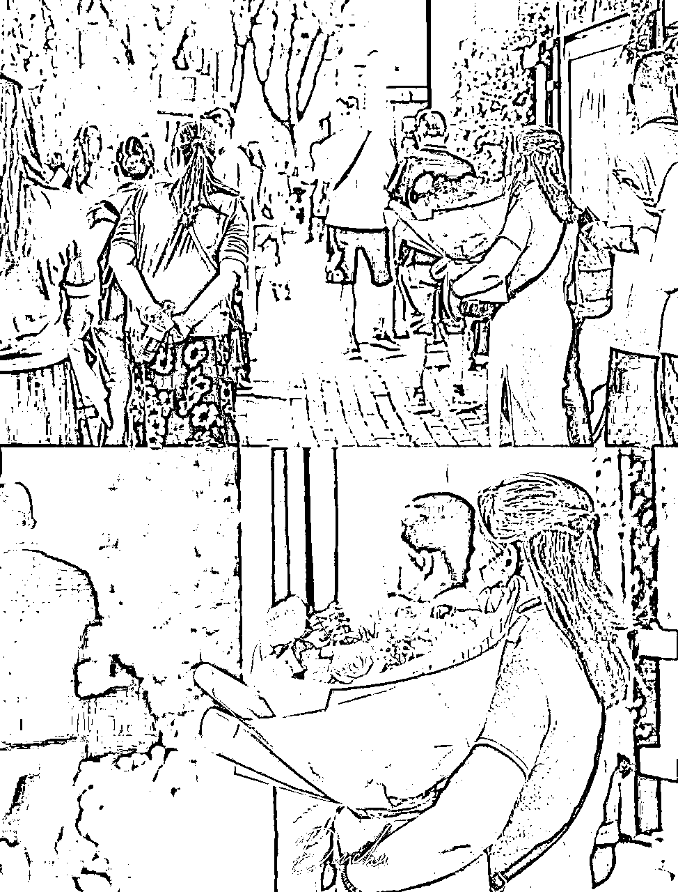
万字长文预警！
接下来我会用干货的形式来分享此篇教程，覆盖了所有的实操细节！
争取让你看完后，无脑照抄的马上去执行赚钱了！
要认真的看完哦
背后需求
十二年寒窗苦读，就为等待这次高考给自己带来人生改变命运的机会
不单单是考生紧张，站在门外等待的家长会更紧张
为了缓解这种紧张和祝福自己的小孩金榜题名，所以心想着要借用什么东西来表达这种心意
花！就是再合适不过的礼物了！
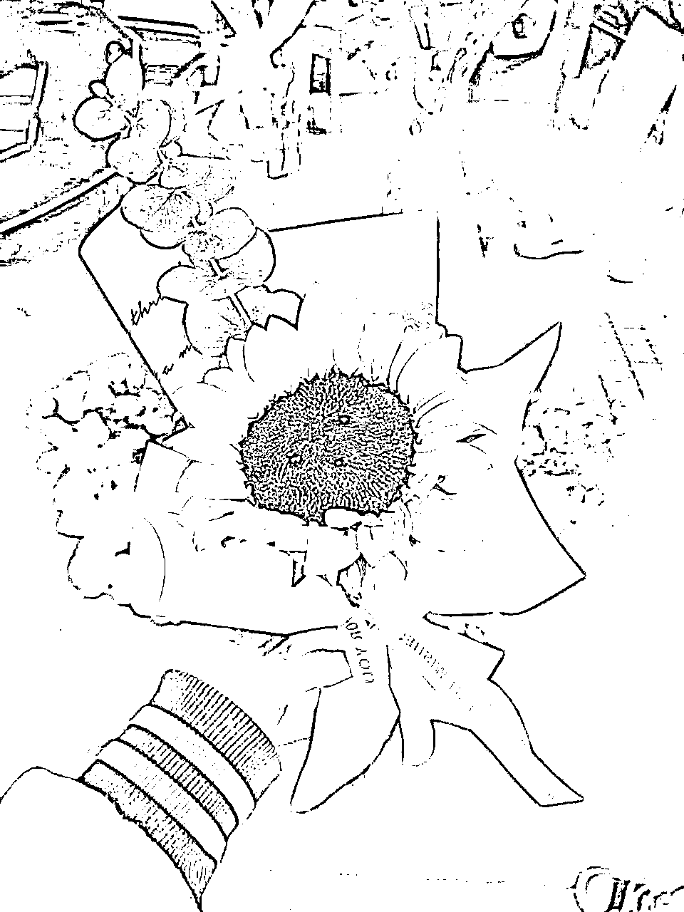
考生紧张的出考场后，见到自己送的惊喜礼物，上面还有祝福语的贺卡，心情自然会放松下来，顺便拍个照，发圈做个纪念
毕竟高考也不是年年都来参加的，所以这就是需求
既然有需求，那肯定会有市场。同时也会有竞争。
所以接下来我会一步步的把全套教程，给你说得明明白白的
各种微小细节都给你想到了，就看你愿不愿去做了
让你觉得我是真心的在输出干货实操技巧
关于客户人群，有些朋友可能会联想到考生，错！
考生很少会给自己买花的。一般都是家长，准确的说是40-48岁之间的人群。
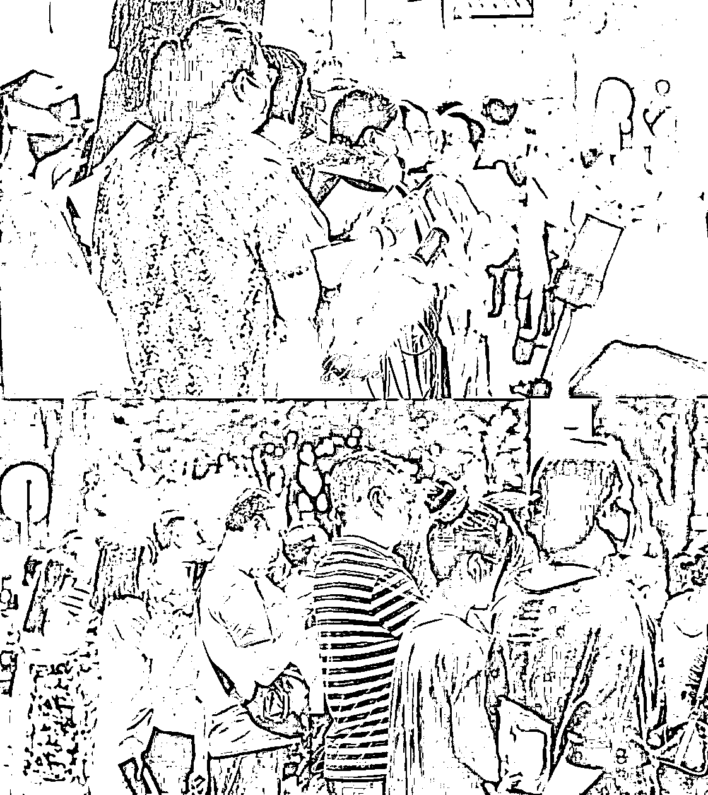
所以先明确清楚你的用户是谁，他们是买来做什么用的
你才会清楚的理顺一整套从进货到销售的完整流程
推荐3种
寓意“一举夺魁”
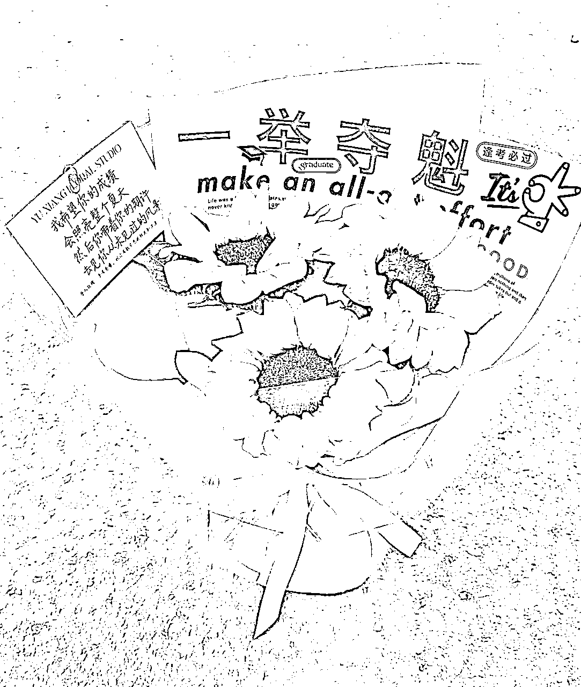
寓意“好运莲莲”
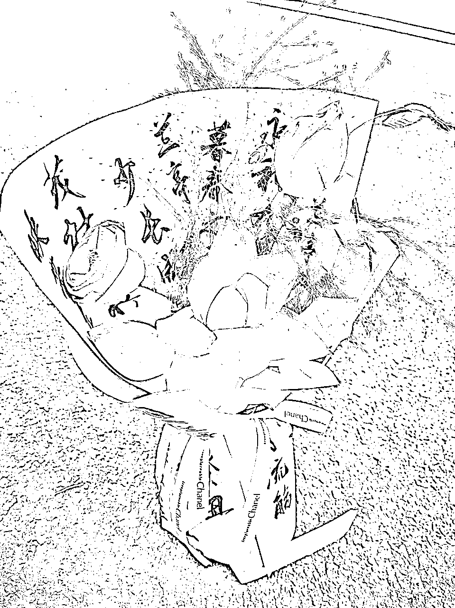
寓意“放青松”
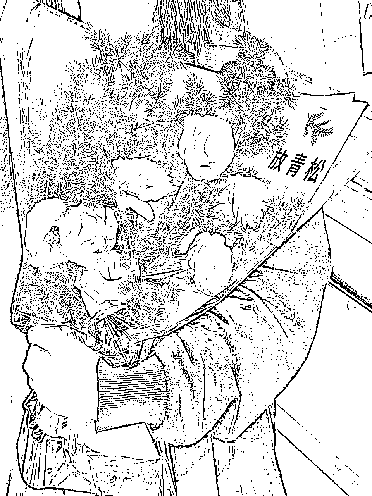
但我更愿意推荐只卖向日葵，根据以往的高考卖花数据和经验来看
向日葵是最畅销的，其他花的品种销量会比较惨淡
如果你想稳定的卖完，不想亏在手上的话，我建议卖热门畅销款的向日葵吧
另外也可以准备一些配花，像尤加利叶、蓝星花等去搭配主花
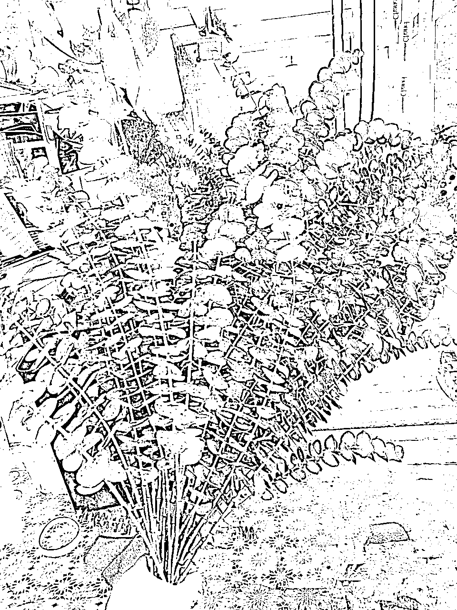
这样能让主花的颜值会更好看，很多家长也因为颜值漂亮才会去购买的
有两种方式
可以在美团或多多买菜下单，优势是性价比高且速度快。基本上第二天早上就到了
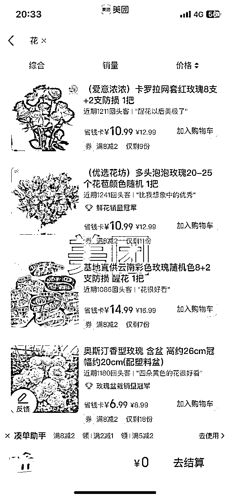
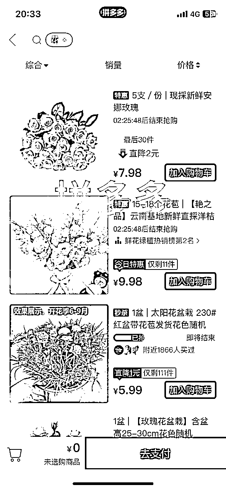
但不建议去淘宝拼多多商城买
第一是天气闷热，运输途中你很难保障到花收到后是否会损坏，理赔麻烦，且影响效率
第二是运输时间长，一般要等待3-4天左右，目前距离高考时间已经不够了
可以去本地找花店，一家家的询问价格并对比
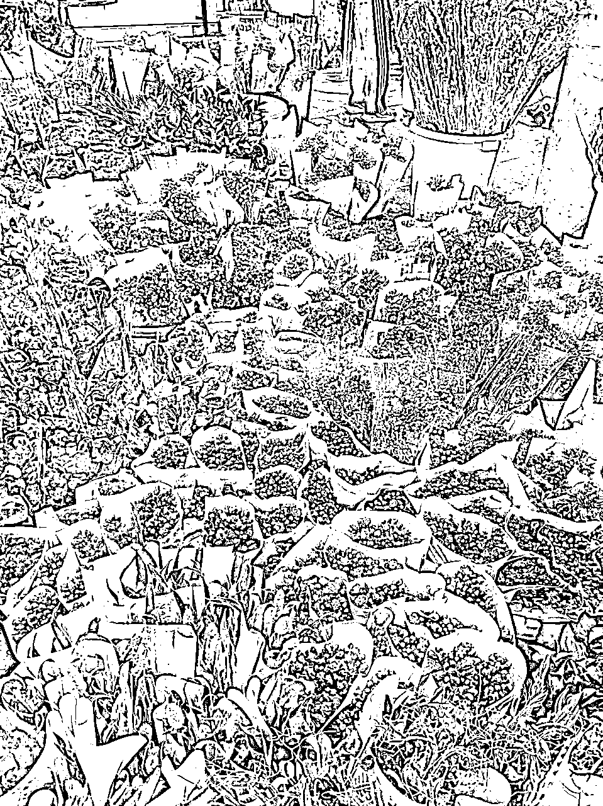
因为考虑到高考期间，花的需求量会上涨，可能会导致部分花的品类价格也会上涨
特别是向日葵这类热门的花品类，前后几天基本上大部分地区都比较缺货
如果询问的时候，最好多问一句，供货量和价格的问题
而且要给自己多备几家供货商，以免途中涨价或缺货，就非常的被动了！
但花店有个不太好的劣势，那就是价格！
如果你想在本地找价格偏低的，可以去找花卉批发市场
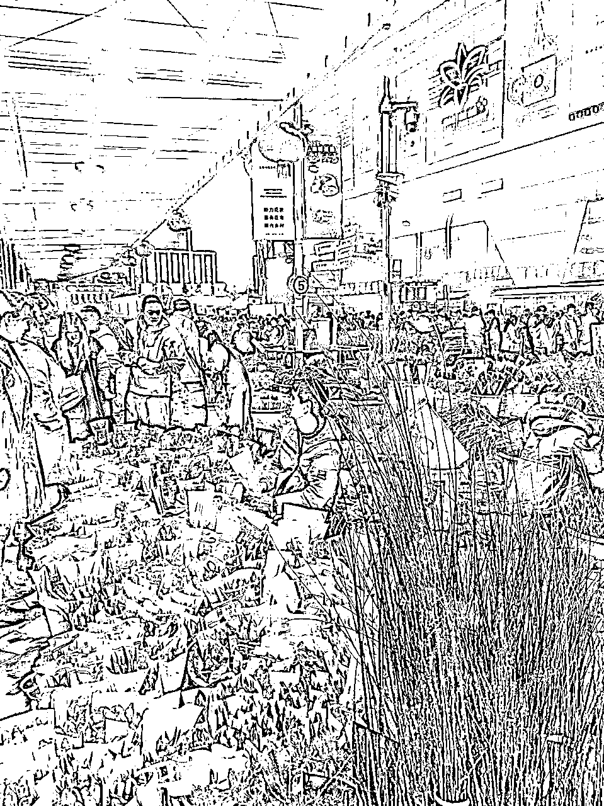
可有些城市是没有花卉批发市场的，但是会有经销商
这怎么找呢？
可以厚着脸皮去问卖花店的，多问几家，总有人会告诉你的
如果放不下这个脸，也可以去网上搜或询问朋友圈的人
以选向日葵为例
建议选花尺寸越大越好
因为花店也会按照花尺寸大小来区分价位的
在同等价位里，选最大的尺寸就对了
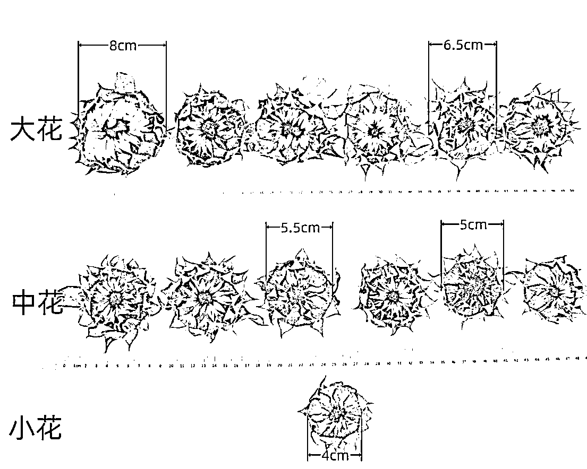
尽量选择图中的3度开放程度，因为距离高考还有最后几天了
如果选1度的话，你卖相不好看，没人会买的
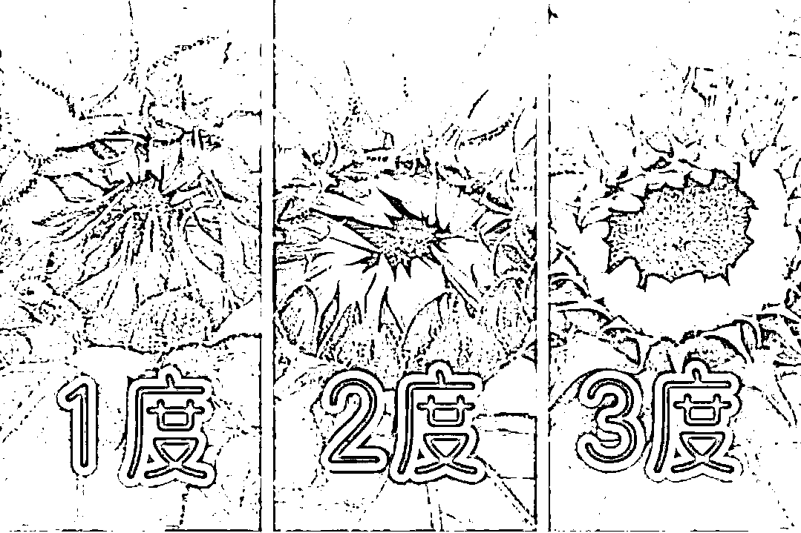
选花瓣外缘没有凋谢征象，花蕊没有发霉，叶子硬挺
不凋萎或玄色黑点，叶数量保存1/3到1/2
茎粗大，基部无凋射或干缩征象
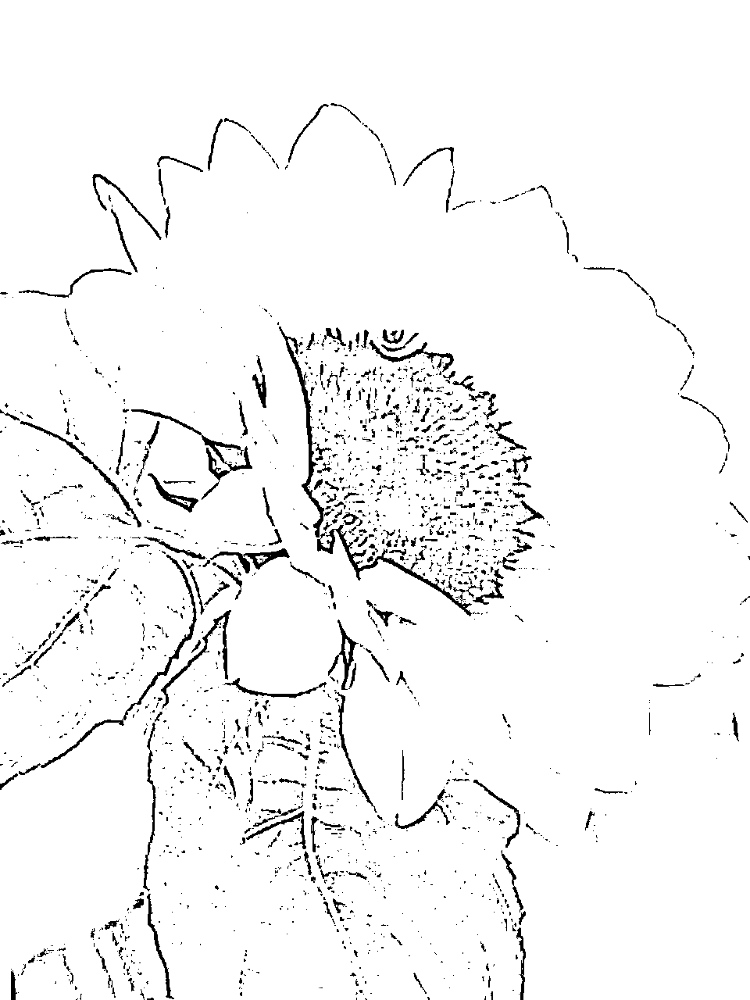
进货300支就够了，太多了你不好摆，而且也不方便搬运
以我们广西柳州的市场批发价为例
如果购买300支起步的话，单只向日葵可以压到3元左右，成本预算在900元
第二包装费，预计在100元左右够了
第三是水桶，如果要买10个的话，预计在100元
第三是零杂小碎的物品，比如贺卡、喷壶、收款码等这些，100元内搞定了
总成本小结：
900+100+100+100=1200元左右，封顶不会超过1500
这个数字我相信大家都能接受，算是小成本的副业吧
给向日葵醒花：
1.收到后摘掉烂的叶子，斜减根部45°，如果缺水严重可以开十字刀
2.花头朝下 放水里泡1小时
3.转过来深水醒花4-8h。不要太久，太久会烂根
4.醒完后浅水养，水里滴几滴84消毒液，有条件的放点保鲜剂，潜水养护结块
另外～向日葵容易烂根，应该经常剪根
要选择在你们当地有名气的学校门口或对面马路
这里有个注意的地方，那就是是否能摆摊
因为高考当天，会有警察和城管维护秩序，需要提前踩点
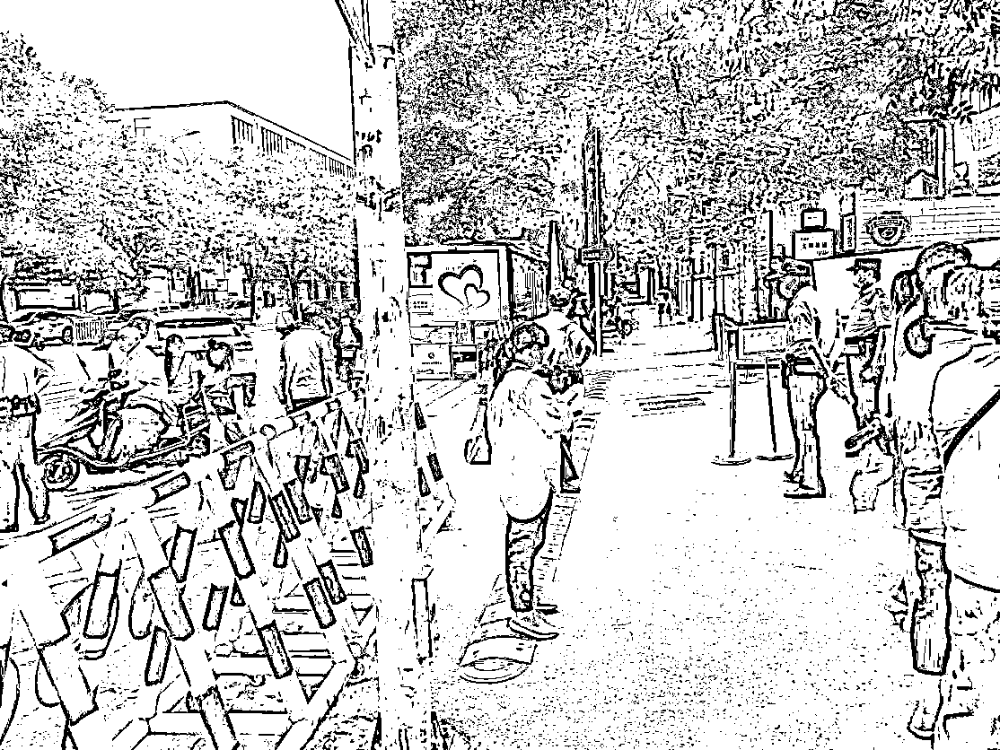
最好的方式是：多选几个点作为备用，万一不能摆，马上转移位置，以免错过最佳卖花时段
切记：别选在垃圾桶旁边，哈哈
早上首场考试结束后
第一天上午考完试后，这时候家长和考生状态还是比较紧张的
也愿意花点钱图个好兆头，拍个照啥的，发圈纪念下
而且有些家长去接学生的时候都自带花，那么不带花的多少有点小尴尬哈哈
看到别人小孩有的，自己小孩也要有
花个几块钱，要提前去文印店，打印自己微信和支付宝的收款二维码
如果想把客户引导到自己的私域微信上，方便二次转化，可以再加上加好友的微信二维码
以免急忙中慌乱了手脚，也影响到自己的做事效率
有些城市当天可能会比较热，花会容易蔫下垂。可以准备小喷壶浇在花瓣上，显得好看同时，还能“延续生命时长”
可能有些花枝过长或不好看，需要临时修剪掉
可以在花店或文具店里买些牛皮纸或透明纸来自己包装
可以去菜市临时买几个水桶回来，要不你花没地方放对吧，直接摆在地上显得不雅观。
实在不行，买几个好看的垃圾桶也行，优点是便宜
这些桶高考两天用完后，可以挂在闲鱼转转上卖，哈哈
用不到的东西就二手卖！这点不能吃亏了
现场需要摆放个桌子，如果家里有小的折叠桌就最好了
这个可以给家长写，也可以自己写
如果是自己写的话，需要提前在手机备忘录里，网上搜集关于高考的祝福文案
小红书知乎上很多的，一搜就出来一大堆了！
切记文案字数别过长
可以找一块加厚的废纸皮(如果没有可以去废旧回收站花1元购买)
在纸皮干净的那面，用马克笔写上文案。
比如：鲜花，xxx元。
如果你不想标价格，也可以写好听的祝福语，但文案别太长
最好要用两种不同颜色的笔来写
这个是消耗品，可以多买两个作为备用
可以开私家车去，方便拿自己的物品
自己开车有个好处是，如果没有地方摆，可以打开后备箱，简单摆放好看些，就可以展示卖了
如果自己没有车也没关系，可以打车，提前跟司机师傅说明情况，一般都会同意的
或者联系身边朋友或父母，帮忙搭自己一程
包装是肯定要的，有包装和无包装，档次肯定是不一样的
怎么包呢，去文具店买牛皮纸或透明纸回来，拿到现场在包
如果不会怎么包装，网上一搜就有很多教程的，哈哈他们比我还专业，我就不放出来献丑了
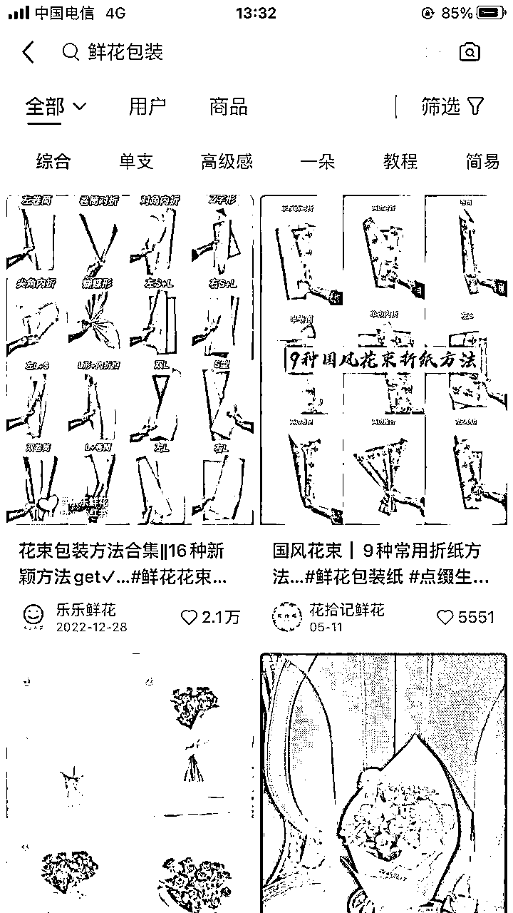
如果按照向日葵单支成本是3元来定价的话
单支定价9.85，定这个价的目的有两个
第一是作为引流品，来吸引用户来围观
可以利用从众心理来引发蝴蝶效应
第二寓意好，985是啥意思，你们都知道的吧
两支+尤加利叶定价21.1，寓意考上211学校
6支整束+配花，定价98.5，这个才是利润款，大力主推这个就行了。
可能有朋友会有疑问，万一家长跟你砍价了怎么办？
这大概率是不会的。家长看到这个价格的寓意后，也乐意接受这个价
一般会很少有人跟你砍价的，这点不必过多担心
我可以临时给你编个话术，不一定全对或合适你的哈
你可以作为参考的方向，过后还需要再改编一套属于自己的话术
“叔叔/阿姨你好，这些花都是刚采摘过来现场包的，很新鲜，可以送您小孩，希望他高考一举夺‘葵’，金榜题名！你看看需要哪束呢，我帮你装上吧。”
“这个价格是不贵的，98.5元代表的是作为你对小孩的心意，通过送花你也希望让他能缓解紧张的心情，争取考个985，一举夺‘葵’！对吧，寓意很好的，看中哪束了，我给你包上吧”
看到路过或眼神一直望着你这边的家长，可以用打招呼的方式，来吸引家长
因为他们在门口外面等2个多钟是比较无聊的，你主动的去跟他们聊聊天，说不定顺便还能买个花，家长都是很好说话的
遇到前来购买的家长，要表示礼貌和嘴甜，多说些感同身受的话，因为自己的小孩高考，他们也会紧张，多说些好听的话，让他们也别那么紧张
因为一个好位置，会直接的决定你的客流量。
如果去晚了，位置离校门口较偏远，那会很影响到你的花束销量
这个能减少你的损耗成本，同时多扩大了你的一个销售渠道
说不定你的朋友看到你在卖花，虽然他不需要，也许可以推荐给他的身边朋友
闲鱼也是个流量大的销售渠道，选几张好看的花束照片，提前一两天发布
可以借用高考的网络热点，进行现场卖花直播
直播教他们如何卖花，如何选花
或者聊聊高考之间的话题，借此能快速涨粉
且都是本地的家长粉，账号后续还可以做其它的变现
可以把你从有高考卖花的想法，到最后摆摊的经历，写成笔记发到小红书上
像这类的内容是很受欢迎的，特别是女生卖花！
涨粉了后续也可以做其他的变现
当有家长向你卖花时，可以有意的提示让他加你的微信
方便后续还有其他的节日，也可以订花，进行二次转化
可以做个加微信小活动
例如：加好友可以送个xxx小礼物
（这个礼物可以是牛皮笔记本，颜值高的笔）
尽量选在有树遮挡的阴凉处，毕竟花被暴晒2个多小时也是会蔫的
可以在水桶里加些适量的水和几滴84消毒液，保持花的新鲜度
哈哈这个问题我还没遇到过，如果所剩不多还有几支的话，可以送给朋友或自己拿回家养着
如果剩余的数量多到不知该如何处理了，我可以建议你在朋友圈便宜卖了，或者在闲鱼上低价卖。
尽量要挽回自己的成本损失，别让自己亏得太离谱了
如果在300支全卖完的情况下，除开成本开支，大概也能赚到2000-2500左右
不说能赚很多，至少比当天上班收入强一点点吧哈哈
不单单是能赚点零花钱，还能锻炼到自己的各方面能力，当做去体验的玩玩也是好的
不要指望着单靠这次卖花，能赚多少钱，把心中的期望值降到最低
能赚那肯定是好事，如果赚不到自己理想中的业绩，也别灰心，就当做是个玩玩咯，没什么的
千万不能因为亏了钱，而质疑自己的能力。失败的事常有，心态放好了才是最重要的，对吧
你们看完后，如果时间和精力不足，不去做也没关系
可以分享给身边朋友去尝试
甚至把我的这份打包成副业小项目，直接卖给别人，标多少价你随意，只要你能赚到钱就行
我公开授权的，没事，放心的拿去吧！
好了，如果哪里看不懂的，可以留个言，看到后会解答的。这次的分享到这结束啦
我叫艾小飞，95后内容创作者。
原创：艾小飞
转载可私信
禁止搬运和抄袭
微信：aifei9977 （记得备注来意）